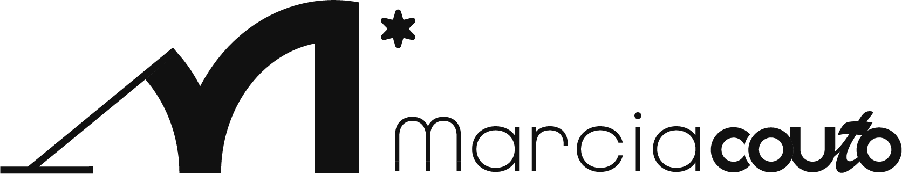

Márcia Couto
Uma marca que não fala apenas de ensaio, mas de mulher voltando para si. A apresentação posiciona a fotografia como experiência de resgate, autoestima e presença.
A direção valoriza acolhimento, elegância e força feminina: menos pose pronta, mais memória, identidade e uma beleza que não precisa pedir licença.
IdentidadeNarrativaEssência feminina
Logo e símboloAssinaturasAplicação editorial
Ver projeto